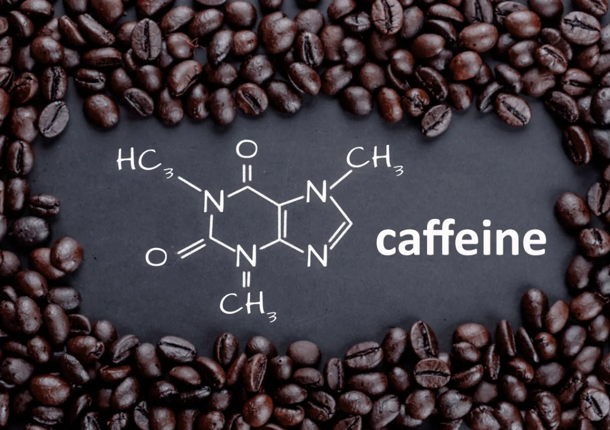
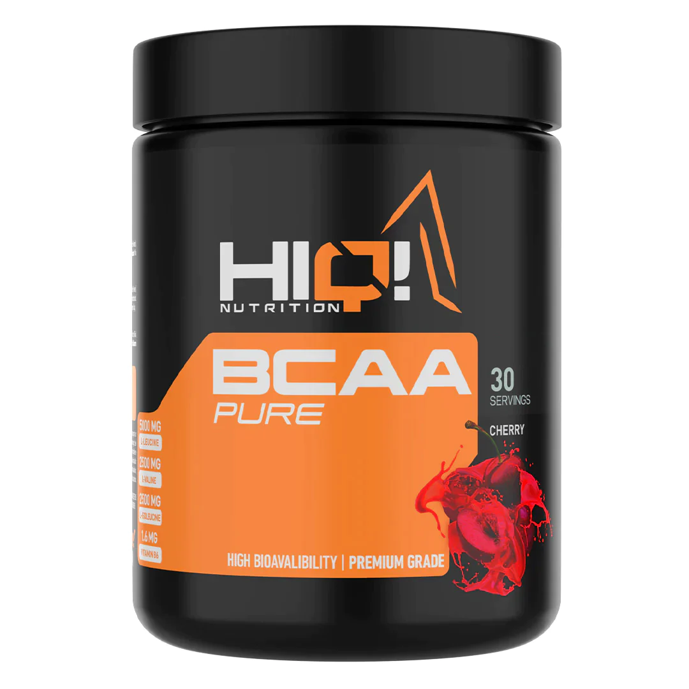

Pre-workout supplementleri, antrenman öncesi enerji ve güç artışını hedefleyen ürünlerdir. İçerdikleri bileşenler, genellikle NOX, kreatin, kafein, BCAA (Branch Chain Amino Acids), beta-alanin, sitrulin malat ve sodyum bikarbonat gibi maddeleri içerir. Bu bileşenlerin kullanımı ve dozajları bireysel ihtiyaçlara göre değişebilir
Kafein
Pre-workout ürünlerindeki ana içeriklerden biridir. Performans artışı için kilogram başına 4-6 mg kafein alımı önerilir. Bireysel kafein duyarlılığı dikkate alınmalıdır.
BCAA (Branch Chain Amino Acids)
- Kas hücrelerinde yıkıldığı için enerji üretimine katkı sağlar. - Antrenman günlerinde ortalama 20 gram BCAA tüketimi önerilir.
Kreatin

- Ağırlık çalışanlar için performans artırıcıdır.
- Günde ortalama 3-5 gram kreatin tüketimi önerilir.
Nitrat (NOX Pre Workout)
- Kan dolaşımını artırarak antrenman sırasında pump hissini artırabilir.
- Kilo başına 6-13 mg nitrat tüketimi önerilir.
Beta-Alanin
- Kas dayanıklılığını artırarak setlerde daha fazla tekrar yapmaya yardımcı olabilir.
- Günlük standart doz 2*5 gramdır.
Sitrulin Malat (Citrulline)
- Vücutta doğal olarak üretilen bir amino asittir.
- Spor performansını artırmak için önerilen l-citrulline dozu 6 gram, citrulline malate
olarak alındığında 8 gramdır.
Sodyum Bikarbonat
- Asidoza iyi gelebilir ve vücuttaki asit seviyesini düşürebilir.
- Kg başına 200-300 mg sodyum bikarbonat alımı önerilir.
Her bireyin vücut yapısı farklıdır, bu nedenle supplement kullanmadan önce doktora danışmak önemlidir. Ayrıca, ürün içeriklerini inceleyerek ve önerilen dozajlara uyarak kullanmak önemlidir, çünkü yanlış dozajlar istenmeyen etkilere yol açabilir.